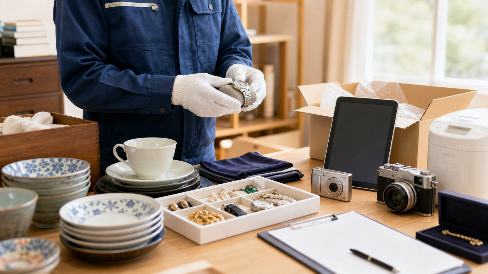
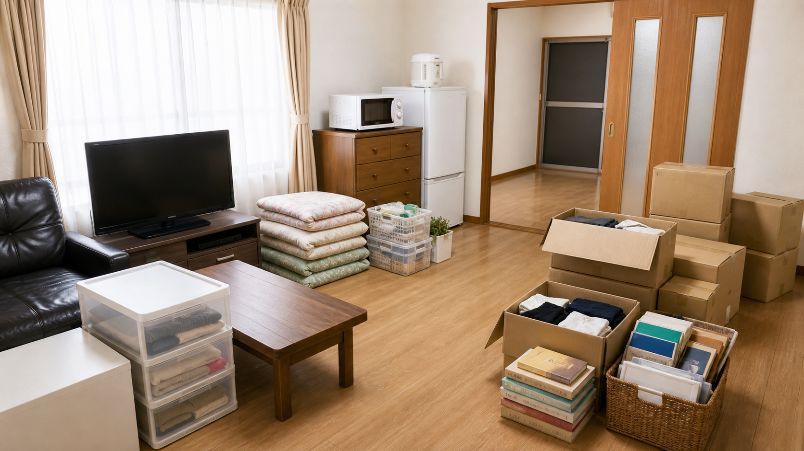

都筑区の生前整理コラム
横浜市都筑区で生前整理を始めるには？何から進めるか迷ったときの考え方
「生前整理を始めたいけれど、何から手をつければいいか分からない」というご相談を、都筑区にお住まいの方からよくいただきます。生前整理は、遺品整理とは違い、本人の意思を確認しながら進められる点が大きな特徴です。実家片付けや施設入居前の整理も含め、現場での経験をもとに具体的な進め方をご紹介します。
まずは電話・LINEでご相談ください
都筑区池辺町の会社として、都筑区内へ相談しやすい体制を整えています。
生前整理とは
生前整理とは、元気なうちに自分の持ち物や暮らしを見直し、必要なものと手放すものを整理していくことです。急に必要になる遺品整理と違い、時間をかけて少しずつ進められること、そして何より本人の意思を確認しながら進められる点が大きな違いです。
「まだ早いのでは」と感じる方も多いのですが、実際には体力や判断力があるうちに始めた方が、負担が少なく済むケースがほとんどです。都筑区にお住まいの方からも、ご本人からのご相談、ご家族からのご相談どちらも増えています。
遺品整理との違い
生前整理
本人が元気なうちに、時間をかけて進めます。本人の意思を確認しながら、残すもの・手放すものを一緒に決められるのが特徴です。
遺品整理
ご家族が亡くなられた後に行います。本人に確認ができないため、書類や思い出の品の扱いについて、ご家族だけで判断する場面が多くなります。
遺品整理の基本的な進め方については、横浜市都筑区の遺品整理で困ったときに知っておきたい整理の進め方でも詳しく解説しています。生前整理と合わせて、違いを確認しておくと進め方がイメージしやすくなります。
生前整理を始めるタイミング
生前整理を始めるタイミングに決まりはありませんが、次のような場面で相談が増えやすくなります。
- 還暦や古稀など、節目の年齢を迎えたとき
- 子どもが独立し、住まいの広さを見直したいとき
- 施設への入居を検討し始めたとき
- 退院後、住環境を変える必要があるとき
- 実家が空き家になりそう、または空き家になったとき
どのタイミングであっても、いきなり全部を片付けようとせず、少しずつ進めることが負担を抑えるポイントです。
まず確認しておきたいもの
生前整理を始める前に、次のようなものがないか確認しておくと安心です。
- 通帳、印鑑、保険証券、権利書などの重要書類
- 現金、貴金属、時計などの貴重品
- 写真、手紙、アルバムなどの思い出の品
- 衣類、寝具
- 家具、家電
いきなり全部を片付けようとせず、書類、貴重品、写真、衣類、家具という順番で進めると、判断に迷うものが後回しにならず、無理なく進めやすくなります。
家族で話し合っておくこと

生前整理は本人の意思を確認しながら進められる点が大きな利点ですが、家族だけで進めようとすると、判断に迷うものが多く、時間がかかることがあります。特に次のような点は、早めに話し合っておくとスムーズです。
- 誰が主に手続きや連絡の窓口になるか
- 思い出の品や写真をどう扱うか
- 家具・家電のうち、引き続き使うものはどれか
- 買取やリユースに回せるものがあるか
一度にすべてを決めようとせず、話し合いの機会を何度か持ちながら進めていくと、本人・ご家族どちらにとっても納得感のある整理につながります。
仕分けの進め方

仕分けを進めるときは、次の順番を目安にすると分かりやすくなります。
- 1. 書類（通帳、印鑑、保険証券、権利書など）
- 2. 貴重品（現金、貴金属、時計など）
- 3. 写真・手紙などの思い出の品
- 4. 衣類・寝具
- 5. 家具・家電
判断に迷うものは、その場で決めずに「保留」の箱を用意しておくのも一つの方法です。すべてをその日のうちに終わらせようとせず、部屋ごと、種類ごとに分けて進めることで、負担を抑えられます。
買取・リユース・資源化できるもの

生前整理では、買取、リユース、リサイクル、資源化まで含めて相談できます。まだ使える家具や家電、貴金属、食器などは、次に活かす形につなげられることがあります。
「これは手放してよいのか、それとも誰かに使ってもらえるのか」と迷うものがあれば、仕分けの段階で一緒に確認しながら進めることができます。
施設入居前や空き家になる前の整理

施設入居前、退院後の住環境変更、実家が空き家になる前などは、生前整理のご相談が増えやすいタイミングです。期限が決まっている場合も多く、次のような点を早めに整理しておくと安心です。
- 新しい住まいに持っていくもの、実家に残すものを分ける
- 大型の家具・家電は搬出経路を確認しておく
- 空き家になった後の管理方法も合わせて考えておく
期限までに終わらせる必要がある場合は、早めにご相談いただくことで、進め方のスケジュールを一緒に組み立てられます。
業者に相談した方がいいケース
次のような状況にあてはまる場合は、早めに業者へ相談することをおすすめします。
- 家財の量が多く、家族だけでは仕分けに時間がかかりそう
- 施設入居や退院など、整理の期限が決まっている
- 大型家具や家電が多く、搬出の見通しが立たない
- 買取やリユースできるものがあるか分からない
- 本人と家族で意見が分かれ、進め方に迷っている
見積もりの相談だけでも構いません。状況をお聞きしたうえで、進め方や気をつけたい点を一緒に整理していくことができます。
アートさくらが都筑区で対応できること
- 神奈川本社が横浜市都筑区池辺町にあり、都筑区内へ相談しやすい体制です
- 本人の意思を確認しながら、家族と一緒に仕分けを進められます
- 買取、リユース、リサイクル、資源化まで、まとめてご相談いただけます
- 約500坪の自社作業場を保有し、時間をかけて仕分け・分別ができます
- 施設入居前や空き家になる前の整理にも対応しやすい体制です
よくある質問
生前整理は何歳くらいから始めるものですか。
決まった年齢はありませんが、還暦や古稀などの節目、子どもの独立、施設入居の検討など、生活の変化があったタイミングで始める方が多いです。体力や判断力があるうちに始めた方が、負担が少なく済むケースがほとんどです。
家族だけで進めても大丈夫ですか。
進められないわけではありませんが、書類や貴重品の扱いなど、判断に迷うものが多く、時間がかかることがあります。迷う点が出てきた段階で、一度ご相談いただくとスムーズです。
施設入居前の整理も相談できますか。
対応しています。入居までの期限が決まっている場合も多いため、早めにご相談いただくことで、新しい住まいに持っていくものと実家に残すものの整理を計画的に進められます。
買取やリユースできるものも見てもらえますか。
可能です。状態のよい家具・家電・貴金属・食器などがあれば、仕分けの際にあわせて確認し、買取やリユースにつなげられるかどうかをご案内します。
都筑区外に住んでいても相談できますか。
ご相談いただけます。都筑区池辺町の本社を拠点に、周辺エリアからのご相談にも対応していますので、まずはお気軽にお問い合わせください。
詳しい料金や作業内容はこちら
都筑区の生前整理・実家片付けの料金目安や作業事例、よくある質問はLPでご確認いただけます。